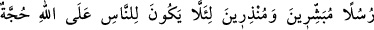
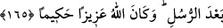

Kutsal Kudüs nura garkoldu
Zü’l-Celâl’in tecellî mumunun nuruyla semaya yükseldi
Orada Hz. Bilâl’in nalininin sesini duydu
İmran oğlu Musa her ne kadar şâh olsa da
Tûr-ı Sînâ’da ona nalinle geçit verilmedi
Şu lütfu gör ki onun yüce derecesi için
Habibini dergahına kölesiyle birlikte kabul eyledi
Rasûlünün kölesini kendi makamına kabul etti
Habibine kendi katına nalini ile yol verdi
İmran oğlu Musa onun bu derecesini ve
Onun kölesini bu yakınlıkta görünce
Dedi: Ey Allah’ım! Ona ümmet eyle beni
Muhammed’in himmetinin tufeyli eyle beni
Odur iki cihan sultanı, bütün mahlûkat tufeyli
Odur her zaman padişah, bütün mahlûkat askeri
Rivâyet edilir ki, Mûsâ (a.s.) Tûr-i Sinâ’ya vardığında Allah yedi fersahlık bir yere
zulmet indirdi, şeytanı ona yaklaşmaktan men etti, onun uykuya olan ihtiyacını yok etti ve
yanında bulunan iki meleği (kirâmen kâtibîn) uzaklaştırdı. Ona semâların kapısını açtı.
O vakit Hz. Mûsâ, melekleri semada ibâdet ederken ve arşı da âşikar olarak gördü.
Allah onunla konuştu ve ona sırrını bildirdi. Ta ki Hz. Mûsâ hiç bir vasıta olmaksızın
Cenab-ı Hak ile mülâkî oldu. Allah Teâlâ vâsıtasız, keyfiyetsiz, ses ve harf olmadan ona
kelâmını işittirmiştir.
165- (Yerine göre) müjdeleyici ve sakındırıcı olarak peygamberler gönderdik ki
insanların peygamberlerden sonra Allah’a karşı bir bahaneleri olmasın! Allah izzet
ve hikmet sâhibidir.
Kıyâmet günü insanların Allah’a: “Ey Rabbimiz bize senin şerîatını açıklayan,
ahkamından bilmediklerimizi öğreten ve bizi gaflet uykusundan uyandıran peygamberler
gönderseydin” diye mâzeret beyan etmemeleri için biz, “peygamberleri” îman ve itâat
edenler için cenneti “müjdeleyici” ve isyan edenleri cehennemle “sakındırıcı olarak
gönderdik ki insanların peygamberlerden sonra Allah’a karşı bir bahaneleri
olmasın!” Peygamberler gönderilmese insanların çoğu iyilikleri tamamıyla idrak
etmekten âciz kalırlardı.
Bu âyette insanlara peygamber gönderilmesinin zarûretine işâret vardır. Âyette